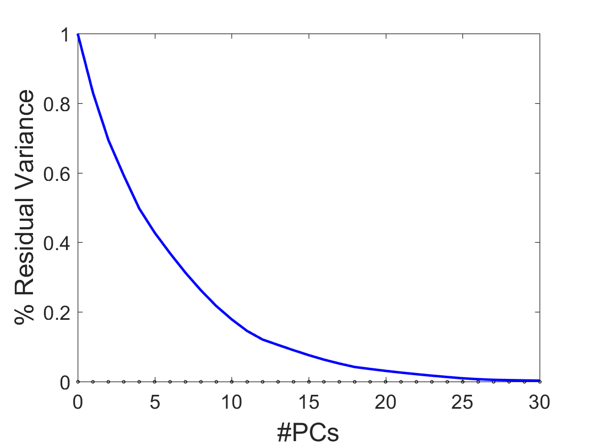
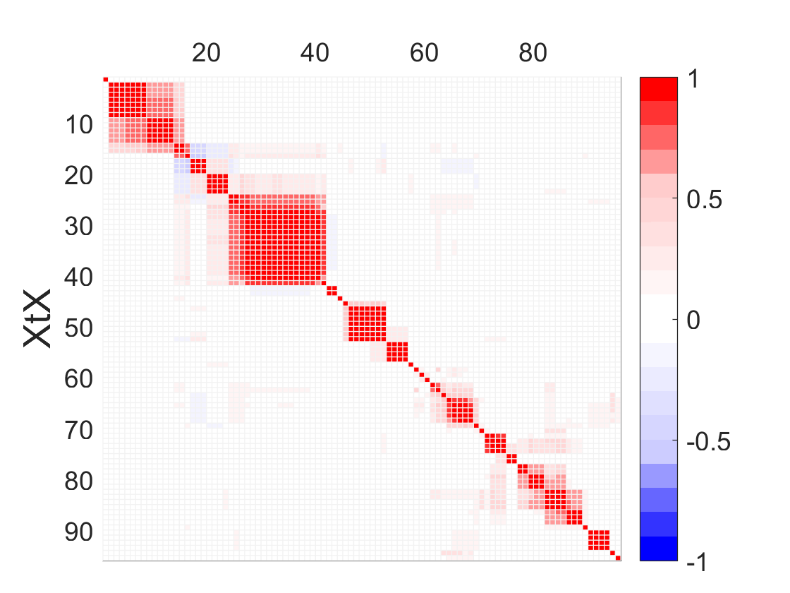
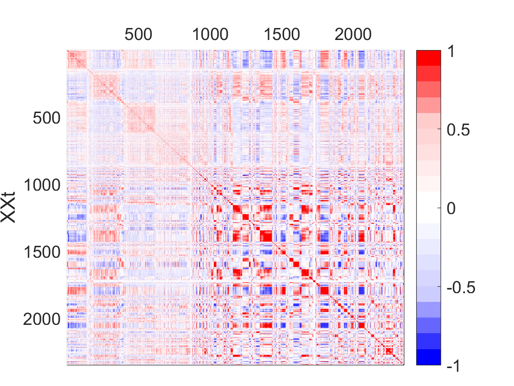
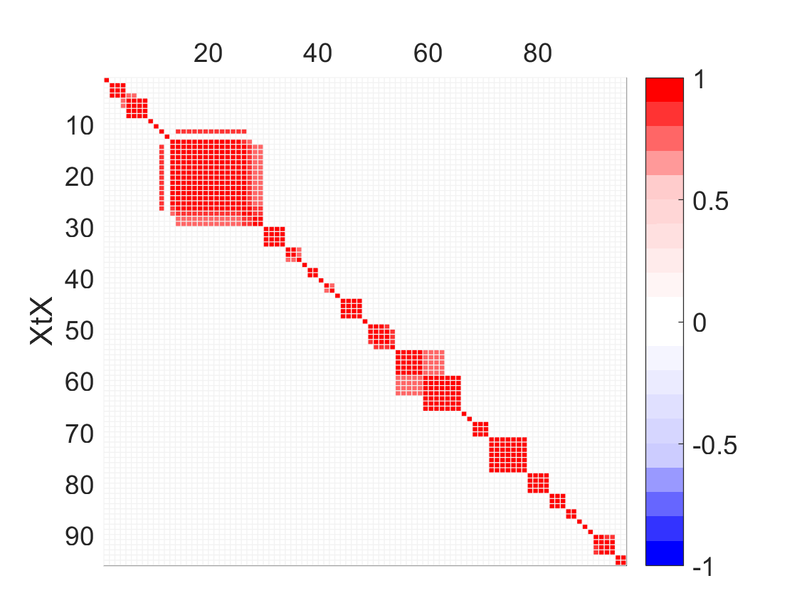
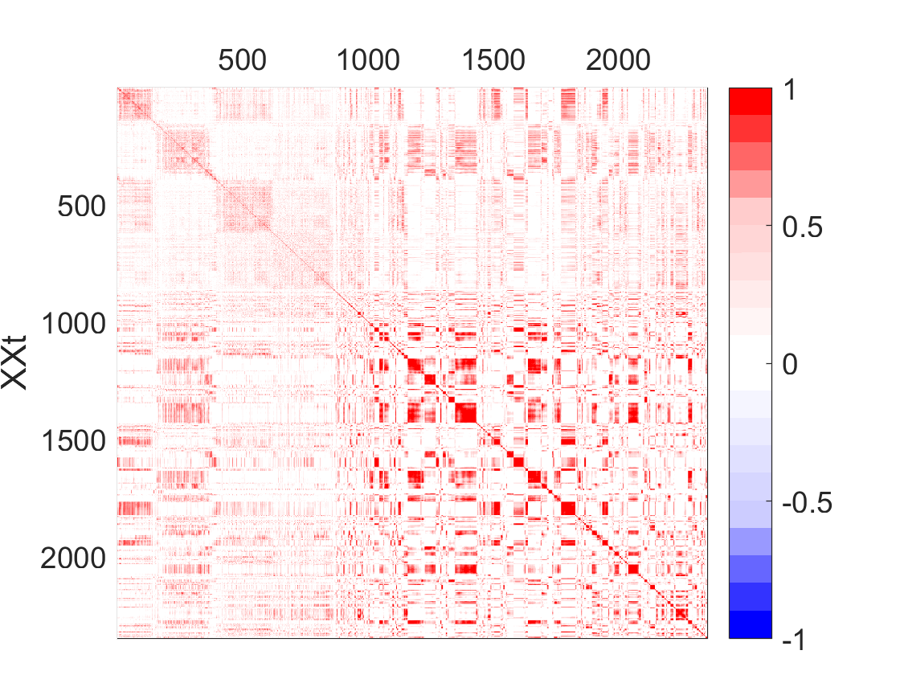

XCAN example of VAST data
J. Camacho, E. Acar, M. Rasmussen, R. Bro. Cross-product Penalized Component Analysis (XCAN), Submitted to Chemometrics and Intelligent Laboratory Systems, 2019.
Needs the MEDA Toolbox (v1.6), the XCAN (path should be properly set, see README file) and Poblano Toolbox (v1.2)
If you use these data, please add a reference to the below paper:
Camacho, J., Rodríguez-Gómez, R., Saccenti, E. Group-wise Principal Component Analysis for Exploratory Data Analysis. Journal of Computational and Graphical Statistics , 2017, 26 (3): 501-512.
Camacho, J., Maciá-Fernández, G., Díaz-Verdejo, J., García-Teodoro, P. Tackling the Big Data 4 Vs for Anomaly Detection. INFOCOM'2014 Workshop on Security and Privacy in Big Data, Toronto (Canada), 2014.
The VAST 2012 2nd mini challenge is a benchmark for visualization in cybersecurity (http://www.vacommunity.org/VAST+Challenge+2012)
The goal is to identify cybersecurity issues in the data collected during two days from a computer network. During those days, a number of non-legitimate programs were found to be running on several computers, slowing them down. A cyber-forensics operation is required to discover the root causes for this strange behavior.
Two typical sources of data are collected from the network: firewall and Intrusion Detection System (IDS) logs. The firewall analyses the incoming and outgoing data traffic in the network, and records in a log file all connection attempts that are blocked according to security policies. The IDS employs higher level intelligence to identify cybersecurity incidents in data traffic. It also stores the results in a log file, though it does not block any traffic connection. Also, typically, it only analyses a sub-set (sample) of the total traffic.
A total of 2350 observations, each one with the information for one minute, are obtained. For every sampling period of one minute, we defined a set of 112 variables that represent the information from the two data sources: 69 variables for the firewall log and 43 for the IDS log. The number of variables was reduced to 95 by discarding those with constant value throughout the capture period. The definition of the variables is introduced in Tackling the Big Data 4 Vs for Anomaly Detection. INFOCOM'2014 Workshop on Security and Privacy in Big Data, Toronto (Canada), 2014.
coded by: Jose Camacho Paez (josecamacho@ugr.es) last modification: 04/Feb/2025
Copyright (C) 2025 University of Granada, Granada
This program is free software: you can redistribute it and/or modify it under the terms of the GNU General Public License as published by the Free Software Foundation, either version 3 of the License, or (at your option) any later version.
This program is distributed in the hope that it will be useful, but WITHOUT ANY WARRANTY; without even the implied warranty of MERCHANTABILITY or FITNESS FOR A PARTICULAR PURPOSE. See the GNU General Public License for more details.
You should have received a copy of the GNU General Public License along with this program. If not, see http://www.gnu.org/licenses/.
Contents
Inicialization, remember to set the path of the toolbox
clear
close all
clc
Data prep & Selection of the PCs
load data/VAST xcs = preprocess2D(x,'Preprocess',2,'Weights',weight_alt); varPca(xcs,'Pcs',0:30,'Preprocessing',0); % 12 PCS could be a choice
Cross-product (XP) matrices
% XP matrices with no thresholding meda_map = crossprod(xcs); [meda_map2,ord] = seriation(meda_map); plotMap(meda_map2); ylabel('XtX','FontSize',20); map_obs = crossprod(xcs'); plotMap(seriation(map_obs)); ylabel('XXt','FontSize',16); save data/vast_stuff_xp % XP matrices after thresholding thr = 0.7; r = find(meda_map<thr); meda_map(r) = 0; [meda_map2,ord] = seriation(meda_map); plotMap(meda_map2); ylabel('XtX','FontSize',16); thr = 0.3; r = find(map_obs<thr); map_obs(r) = 0; plotMap(seriation(map_obs)); ylabel('XXt','FontSize',16); save data/vast_stuff_thr_xp
Warning: Figure is saved in data/vast_stuff_xp.mat. Saving graphics handle variables can cause the creation of very large files. To save graphics figures, use <a href="matlab:helpview([docroot,'/techdoc/ref/savefig.html'])">savefig</a>. Warning: Figure is saved in data/vast_stuff_thr_xp.mat. Saving graphics handle variables can cause the creation of very large files. To save graphics figures, use <a href="matlab:helpview([docroot,'/techdoc/ref/savefig.html'])">savefig</a>.   
GPCA: Centered data + X-thresholding
close all clc load data/vast_stuff_thr_xp c = 0.7; [b ,stg]= gia(meda_map,c); % GPCA [P,T] = gpca(xcs,stg,1:4); varX = trace(xcs'*xcs); for i=1:4 figure t = T(:,i); % score lim = tinv(0.99,size(t,1)-1)*std(t)*sqrt(1+1/size(t,1)); timestamps{i} = obs_l(find(t>lim | t<-lim)); subplot(2,1,1), plot(t,'.-'), hold on, plot(-lim*ones(size(t)),'r--'),plot(lim*ones(size(t)),'r--') ylabel('Scores','FontSize',20), axis tight, xlabel('Time','FontSize',20) Xp = (T(:,i)*pinv(T(:,i)'*T(:,i))*T(:,i)')*xcs*(P(:,i)*pinv(P(:,i)'*P(:,i))*P(:,i)'); varP = trace(Xp'*Xp); title(sprintf('GC: %i, variance: %.0f%%',i,100*varP/varX),'FontSize',20) subplot(2,1,2), bar(P(ord,i)) % loading ylabel('Lodings','FontSize',20) xlabel('Features','FontSize',20) end E = xcs - T*P'; varE = trace(E'*E); ResidualVar = 100*(varE)/varX
Error using gia (line 98) Expected a string scalar or character vector for the parameter name, instead the input type was 'double'. Error in ej_vast (line 118) [b ,stg]= gia(meda_map,c);
XCAN: Centered data + X-thresholding
lambda = [.5] varX = trace(xcs'*xcs); for k=1:length(lambda) [P, T] = xcan(xcs,1:4,meda_map,lambda(k),map_obs,lambda(k)); for i=1:4 figure t = T(:,i); % score lim = tinv(0.99,size(t,1)-1)*std(t)*sqrt(1+1/size(t,1)); timestamps{i} = obs_l(find(t>lim | t<-lim)); subplot(2,1,1), plot(t,'.-'), hold on, plot(-lim*ones(size(t)),'r--'),plot(lim*ones(size(t)),'r--') ylabel('Scores','FontSize',20), axis tight, xlabel('Time','FontSize',20) Xp = (T(:,i)*pinv(T(:,i)'*T(:,i))*T(:,i)')*xcs*(P(:,i)*pinv(P(:,i)'*P(:,i))*P(:,i)'); varP = trace(Xp'*Xp); title(sprintf('XC: %i, variance: %.0f%%',i,100*varP/varX),'FontSize',20) subplot(2,1,2), bar(P(ord,i)) % loading ylabel('Lodings','FontSize',20) xlabel('Features','FontSize',20) end E = xcs - T*P'; varE = trace(E'*E); ResidualVar = 100*(varE)/varX end
XCAN (only in the rows): Centered data + X-thresholding
lambda = [.5] varX = trace(xcs'*xcs); for k=1:length(lambda) [P, T] = xcan(xcs,1:4,meda_map,lambda(k),map_obs,0); for i=1:4 figure t = T(:,i); % score lim = tinv(0.99,size(t,1)-1)*std(t)*sqrt(1+1/size(t,1)); timestamps{i} = obs_l(find(t>lim | t<-lim)); subplot(2,1,1), plot(t,'.-'), hold on, plot(-lim*ones(size(t)),'r--'),plot(lim*ones(size(t)),'r--') ylabel('Scores','FontSize',20), axis tight, xlabel('Time','FontSize',20) Xp = (T(:,i)*pinv(T(:,i)'*T(:,i))*T(:,i)')*xcs*(P(:,i)*pinv(P(:,i)'*P(:,i))*P(:,i)'); varP = trace(Xp'*Xp); title(sprintf('XC: %i, variance: %.0f%%',i,100*varP/varX),'FontSize',20) subplot(2,1,2), bar(P(ord,i)) % loading ylabel('Lodings','FontSize',20) xlabel('Features','FontSize',20) end E = xcs - T*P'; varE = trace(E'*E); ResidualVar = 100*(varE)/varX end